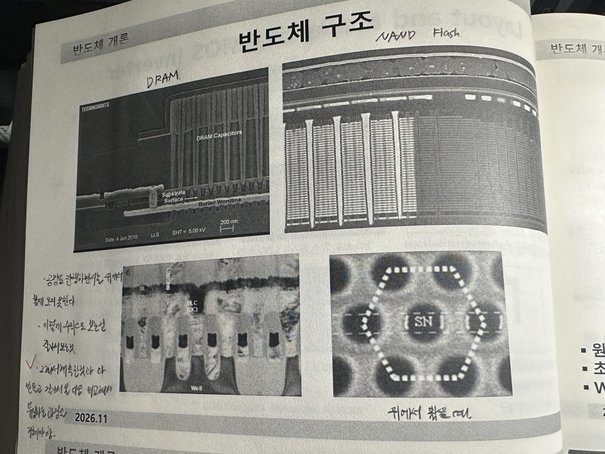
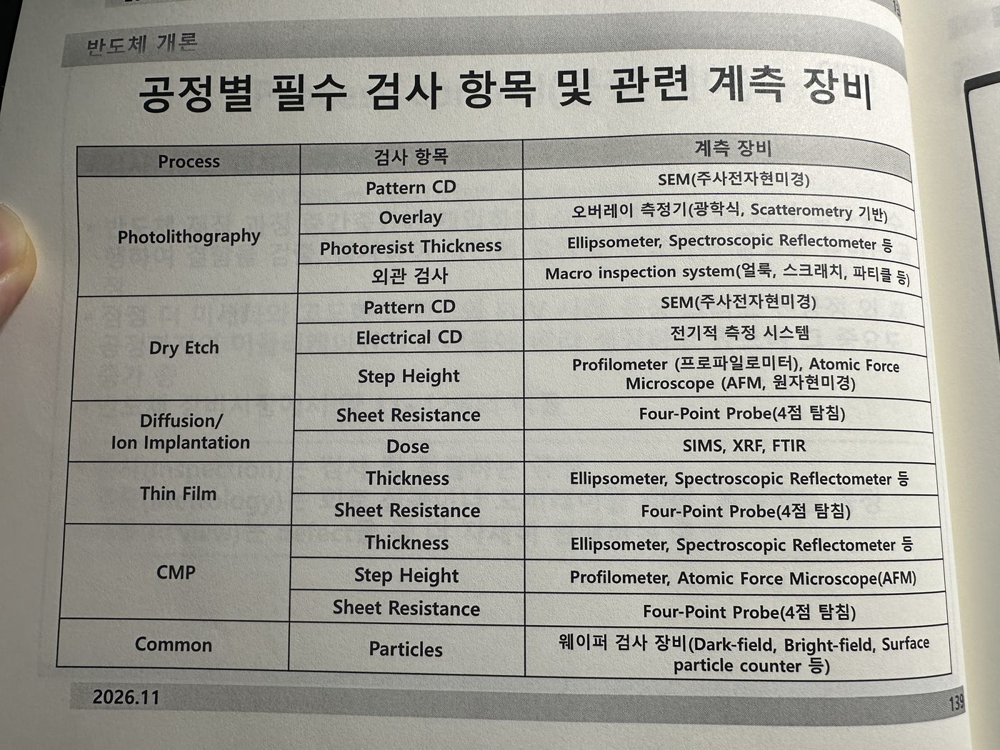
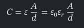
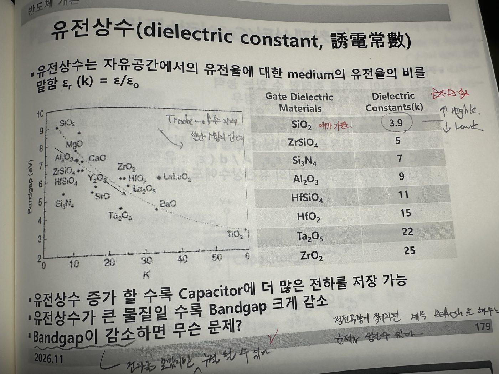
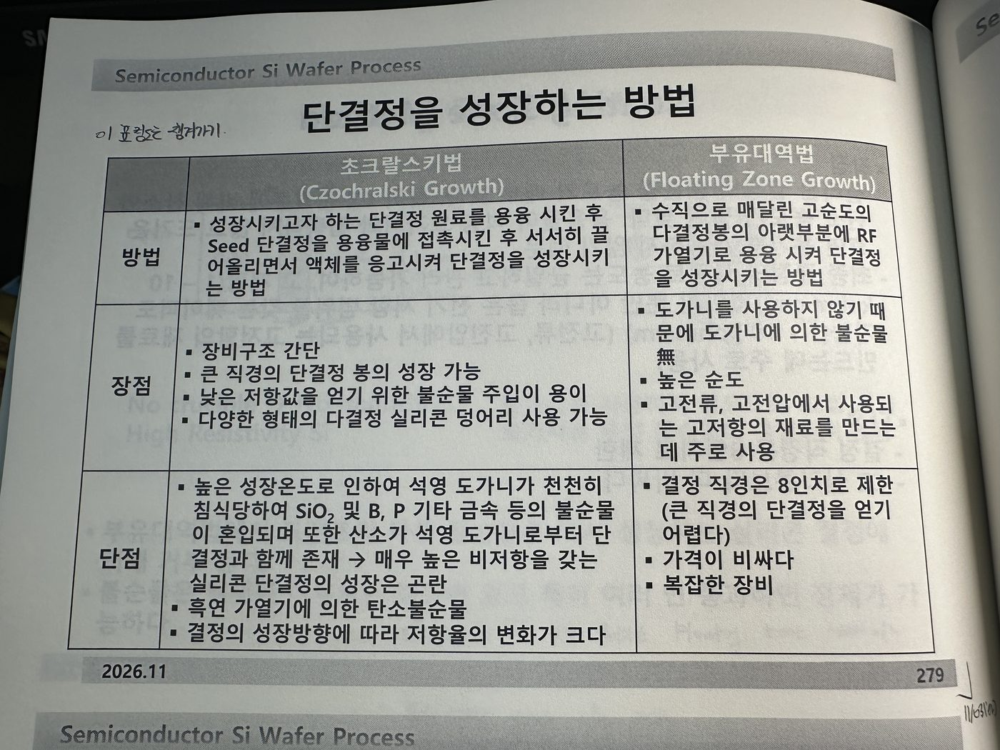
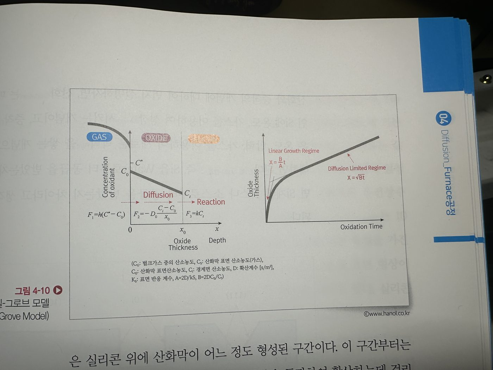
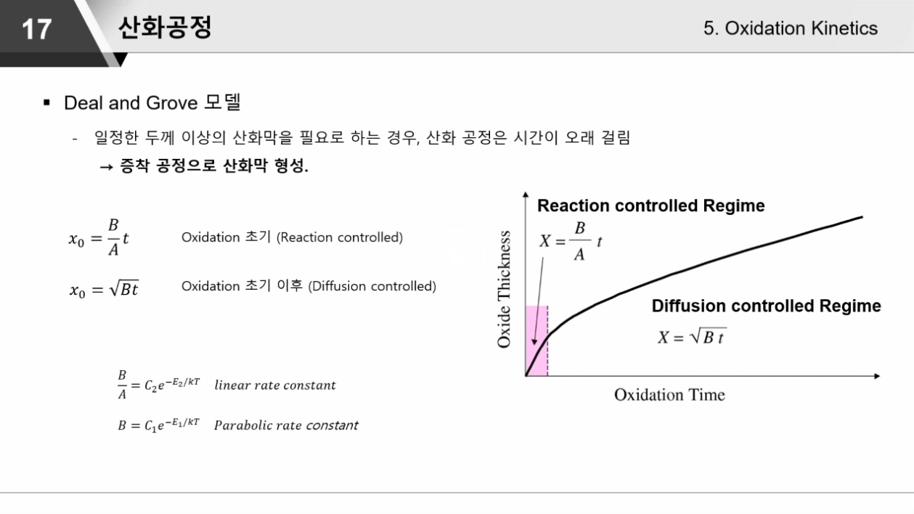

더인 교육 2일차
1. FOUP, OHT, AGV
- FOUP은 웨이퍼를 담고 있는 박스를 의미한다. 200mm에서는 열린계였고, 300mm에서는 닫힌계였다.
- OHT는 Overhead Hoist Transport이다. 주로 반도체 웨이퍼를 옮긴다.
- AGV는 디스플레이용 기판을 옮기는 데 사용하더라.
- FOUP에서도 Purge를 진행하더라. 웨이퍼를 담고 있지만, 여기에서도 여전히 O₂나 H₂O를 케어해야한다. 왜냐하면 구리와 같은 경우는 산화될 수 있고, 산화되면 식각이 잘 일어날 수 있다. 그리고 결함이나 결정이 성장할 수도 있다. 그 환경에서. 그래서 결국은 비활성기체 (N₂) 사용해서 퍼지해주는 거지
2. ESD (Electrostatic Discharge)
- 정전기가 그렇게 중요한지 몰랐다. 정전기 또한 제어가 필요하다.
- 절연체에 패터닝을 진행할 때 절연체이기 때문에 정전기가 쌓이게된다. 그러다가 그 정전기가 한 번에 빠져나가게 되면 전자가 확 이동하면서 파괴가 일어날 수 있다.
- 그래서 전기적으로 중성을 가질 수 있게 노력을 많이 하더라. 그리고 이건 포토 공정에서 특히 많이 일어나더라.
- 정전기를 관리하려면 정전기가 쌓이지 않고 빠져나갈 수 있게 세팅을 하고, 정전기가 많이 생기지 않도록 습도 또한 관리를 잘 해줘야 한다.
- ‘이오나이저’ 가 주로 정전기를 제거해주게 된다.
3. Particle(입자)
- Particle 자체는 셀 수 있는 것이어야 함. 왜냐하면 안보이는데 셀 수는 없으니까.
- Cleaning은 배번 진행할 수 없다. 또한 입자만 cleaning 하지도 않고, 전체적으로 세정이 되기도 한다. 그리고 그 과정에서 화학적인 작용이 일어나서 살짝(slight) 식각이 일어나기도 한다.

- photo 공정에서 PR위에 입자가 있으면 빛이 흡수되거나 산란될 수 있다는 사실은 내가 놓쳤네
- ALD 같은 경우는 원자 한 층 단위이다 보니까 증착될 때 끊겨버릴 수도 있다는 것도 생각 못했네.
- Etch 진행할 때 Particle에 의해 가려져서 선택비가 안좋아질 수 있다는 것도 같이 챙겨가면 좋겠다.
4. 반도체 구조

- 우리가 반도체 공정을 진행할 때는 위에서 아래를 내려다보는 형태로 본다. 그렇기 때문에 단면 사진이 있다면 그건 공정을 진행한 뒤에 단면도를 찍어서 보는 것이다.
- 그래서 공정을 진행하면서는 계측한 결과와 실제로 만들고 난 다음에 잘라서 본 결과를 비교해가며 다음 공정에는 그 차이를 줄이기 위해 튜닝하는 과정을 거친다고 한다.
5. Photo 공정과 Dry Etch 비중이 동일하지 않은 이유
- Photo 공정이 8%일 때 Dry Etch 13%를 차지하는 이유는 우리가 Photo 공정과 Etch 공정이 세트인 것은 알고 있다. 하지만 꼭 일대일 대응은 아닌게 Etch back 할 때가 있기 때문이다. Etch back은 별 대단한 의미는 아니고 그냥 웨이퍼 표면을 전체적으로 식각 해내는 공정을 의미한다.
6. 공정별 필수 검사 항목이랑 계측 장비

- 이 때 PR의 두께가 두꺼운 곳이 있으면 어떻게 될 것 같냐고 물었는데 내가 답을 못했다. 실제로 Etch 공정 이전에 Exposure을 할 때 문제가 생기겠지. 근데 이 문제의 관점이 현상 이후냐 전이냐에 따라서 대답 방향성이 달라졌을 것 같긴해. 강사님은 Spin coating하고 문제가 생겼을 때를 물어봤지만, 답하는 입장에서는 이미 현상까지 마친 상태인데 두꺼우면 어캐되냐에 대한 답을 할 수도 있는 상황이다. 그래서 나도 처음에는 Etch에서 문제가 생긴다고 생각했다.
- PR의 두께는 곧 CD의 균일도와 관련이 있다. 결국 노광할 때 들쑥날쑥 해지기 때문이다. 그리고 보편적으로 봤을 때 PR의 두께가 두꺼워지면 CD가 무조건 커지는 건 아니지만 그 경향성을 보면 대체적으로 비례해서 커진다고 한다.
7. 예전에 Ge 을 Si 대신에 사용했었는데 Ge 의 단점에 대해서
- 예전에 최초의 트렌지스터는 Ge를 사용했었다. Si보다 원자가 껍질이 한 개 더 많기 때문에 최외곽 껍질에 존재하는 전자에 원자핵이 미치는 인력은 약해진다. 따라서 열 에너지를 조금만 가해도 밴드갭을 넘어 자유전자가 되어버릴 수도 있다. 그래서 우리가 원하는 상황이 아니더라도 열에 의해 점프하게 되면, 우리가 제어한다고 말하기 어렵다. 그래서 불안정 하기 때문에 Si를 사용하는 편이 좋겠다.
8. N-Type 반도체와 P-type 반도체에 대해
- N-Type에서 사용하는 비소 As, 인, 안티몬 Sb 는 Donor 원자라고 부른다.
- P-Type에서 사용하는 알루미늄, 붕소, 갈륨은 Acceptor 원자라고 부른다.
→ Donor랑 Acceptor 용어 한 번씩 짚고 넘어가면 좋겠다.
9. 유전체
- 분극이 발생하는 물질을 의미한다.
- 유전체에 절연체가 포함되고, 절연체는 유전율이 아주 작은 유전체를 말한다.
- 우리가 High-k 물질은 capactior나 MOS에 Oxide 층에 사용한다. Low-k는 구리 배선들 사이에서 절연 역할을 할 수 있게 해준다.

- 유전율 식에서 면적이 커질수록, 유전상수가 커질수록, 두께가 얇을수록 정전용량이 커지게 된다.
10. 유전상수
- 유전상수는 k 값이라고 불리우는 것이다.
- 유전상수가 크면 곧 밴드갭이 작아지는데, 이러면 유전상수가 클 때는 정전용량이 커져서 좋지만, 밴드갭이 작아지게 되면 전자가 쉽게 점프해서 전도대로 넘어가서 전류 누설이 생길 수 있다.
- Low-k, High-k로 정의되는 것은 SiO₂의 유전상수인 k=3.9를 기준으로 이것보다 작으면 Low-k, 높으면 High-k가 된다.
- Low-k를 만들기 위해서는 공극률이 커야한다. 그래서 실제로도 10나노 급 공정 진행할 때 금속 배선들 사이에 일부러 공기를 두더라고.
- High-k를 만들면 당연하게도 정전용량이 높아진다. 그리고 누설전류가 제어된다.

11. Capacitor 소자
- 예전에는 Si wafer를 식각해서 파내고 그 안에 Capacitor를 넣었고, 그게 유리하다고 생각했었다. 하지만 Si자체를 HAR로 파내는게 어려워졌고 그에 따라 세우는 방식으로 바뀌게 되었다.
- Capacitor 자체의 종횡비가 크게 때문에 생길 수 있는 문제에 대해서도 다뤘다. 점점 공정을 마치고 진행하는 공정 단계에서 어려워진다고 한다. 왜냐하면 물이 건조 될 때 표면장력에 의해 문제가 생길 수 있다.
12. RC delay
- Al보다 Cu의 저항이 낮고 Al과 SiO₂의 기술의 한계에 부딪혀 Cu와 Low-k 조합으로 바뀌게 되었다.
13. 실리콘 단결정 성장 방법
- 초크랄스키법 VS 부유대역법 차이

- 초크랄스키법 순서: Quartz 도가니를 준비 → 조각난 Poly Si 준비 → Si 녹는점 이상에서 녹이기 → Soaking 온도 일정하게 유지 → Dipping 담구기 → Necking 직경이 얇은 Si 봉 형성 → Souldering 을 통해 Body 직경 결정 → Body growing → 얼마 안남았을 때 Tailing이 생기게 된다.
14. 수업 예습: 시간에 따른 SiO₂ 두께 그래프
Q. 시간에 따라 변화하는 SiO₂ 두께의 그래프를 그리고 특성을 설명
SiO₂는 Si를 열산화를 하여 만들 수 있습니다. 물론 증착을 통해서도 SiO₂를 만들 수 있지만 품질은 열산화가 우수합니다.
열산화에서 O₂(산소)를 사용하면 건식산화로 속도는 느리지만 품질이 좋습니다. H₂O(수증기)를 사용하면 습식산화로 속도는 빠르지만 품질이 상대적으로 좋지 않습니다.
초반에는 산화막이 얇기 때문에 금방 확산되고 표면에서의 반응 속도가 지배적이다. 일정 시간이 지나게 된다면 산화막 자체가 두꺼워지기 때문에 확산해서 표면까지 도달하는데 시간이 걸린다.
그래서 초반에는 Reation process, 이후에는 Diffusion process가 일어난다. 이를 수식에 적용해서 그래프로 나타나면 다음과 같다. 초반에는 직선적으로, 이후에는 점점 증가하는 정도가 감소하는 형태이다.


이를 통해 두께를 두껍게 하기 위해 시간을 길게 보내다 보면 성장속도가 느려져 특정 두께 부터는 느리게 성장하게 된다.
산화막 성장 속도 제어와 관련된 파라미터는 온도, 결정면, 건식vs습식, 압력, 시간 등이 있습니다.